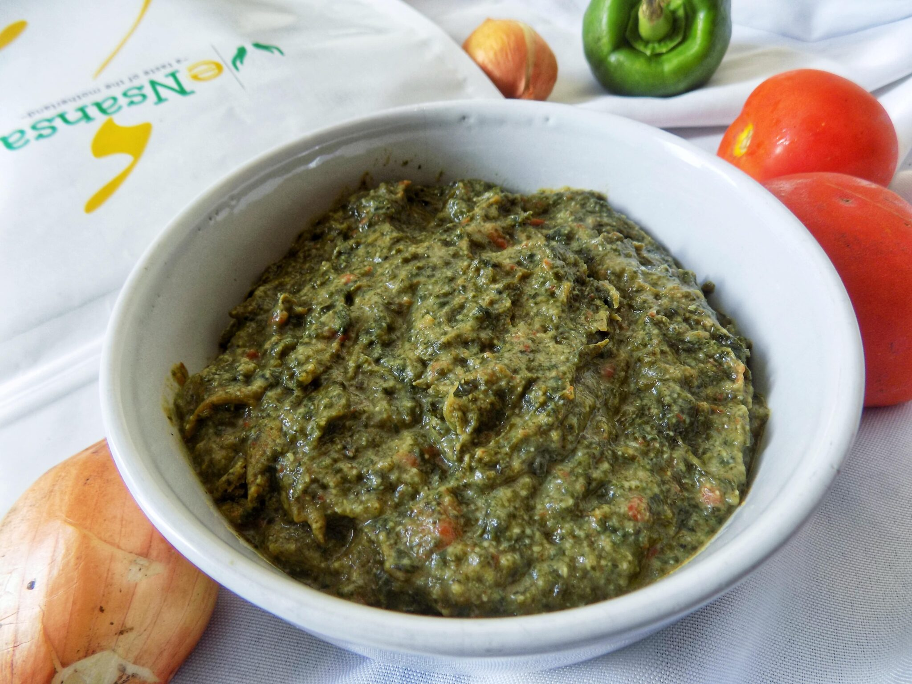

Dry Chibwabwa with Groundnuts

How to Cook Dry Chibwabwa with Groundnuts
Chibwabwa is pumpkin leaves. it can be cooked with groundnuts when its both fresh and dry.
in this recipe, we are going to learn how to cook dry chibwabwa with groundnuts.
Ingredients
- Dry chibwabwa (3 cups)
- Raw Pounded groundnuts (powder)(1 1/2 cup)
- A teaspoon of Soda
- Some salt
- 1 Medium Tomato
- 1 Medium Onion
Steps
- Soak the dry Chibwabwa in warm water for at least 2 hours
Remove from the water leaving the dirty particles on the bottom as residue
Clean again in water
- Put in a pot with half a glass of water and boil
- Add groundnuts, soda, salt and tomato
Cook for about 20 minutes
- Add some onions and simmer for 5 minutes
- Ready to serve with Pap Enjoy!